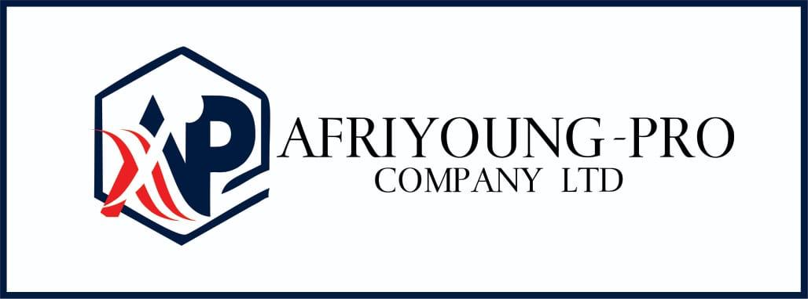

|  |
GH LTD |
|---|
Afriyoungpro Furniture Ltd will be formed as an office and home furniture company specializing in custom made wood furniture for the high-end residential, resort, and commercial market. Its founders have extensive experience in the construction and furniture industry. Afriyoungpro Furniture will operate under the umbrella of Afriyoungpro Companies Ltd., the main company sharing staff, office space, and administration costs. However, for the purpose of business planning, we are treating Afriyoungpro Furniture as a separate company.
With the current immerging estates development sector in Ghana, the company has seen the need for a home and office furniture manufacturing line with a broad design choices made of quality wood with a good finishing in order to be the preferred name for luxury homes, offices, resorts and hotels. The company therefore projects a very good profit margin which will enable the company grow rapidly.
Afryoungpro companies Ltd has provided the capital to cover the start-up expenses as well as the operation expenses. That includes the construction of a showroom and a manufacturing factory at Winneba in the Central Region of Ghana.
The objectives of Afriyoung Furniture are:
To deliver a high-quality product, on time and within budget while also providing a fast, error free ordering system.
To help the country move away from the importation of low quality furniture mainly from the East.
Our product is essentially made with two main components.